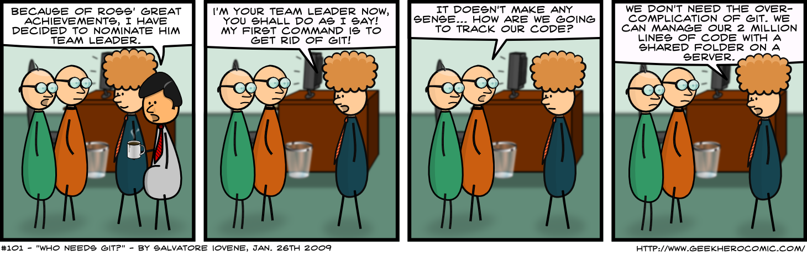
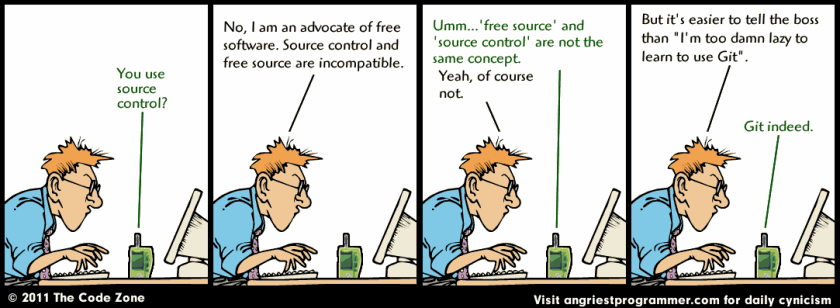

Table of Contents
1 Software Engineering 101: Introduction to Git
Welcome to NSL 3.0's class Software Engineering 101: Introduction to Git where you, the aspiring git Hacker will watch, learn, and do in your quest to revise code in an ordered manner.
This is a beginner's introduction but hopefully you at least have a copy of git version 2 or greater available to you and an editor of some kind (for later).
2 git
- git
noun
BRITISHan unpleasant or contemptible personI'm an egotistical bastard, so I name all my projects after myself. First Linux, now git. – Linus Torvalds
2.1 References
2.2 Social coding
3 Why

Figure 1: This is the reason why
3.1 Comics

Figure 2: Yes, you do

Figure 3: Punny but don't let this be you

Figure 4: Baby steps

Figure 5: Squashing and Rebasing preferred
3.2 Benefits to you, the Hacker
- History
- Store your data with all changes through time
- Integrity
- Since everything is hashed and full objects stored
- Flexibility
- Support the workflow that works for you no matter how custom
- Discoverability
- Share your code publicly and maybe get some contributors
4 How
4.1 Git under the hood
4.1.1 git book: Getting Started: Git Basics
SVNandCVS- centralized difference-based systems
SVN- Known to corrupt over time, thanks to this architecture
git- by contrast, is decentralized and snapshot based with all data hashed and packed
- Committed
- The data is safely stored in your local database
- Modified
- You have changed the file but have not committed it to your database yet
- Staged
- You have marked a modified file in its current version to go into your next commit snapshot
- Working Directory
- The currently being worked on directory tree
- Staging Area
- The ready to be committed data
- Repository
- The committed data
4.2 Git work flows
Generally you should go for something like Github Flow in modern times where one is Continuously Integrating and Continuously Deploying.
Sometimes, though, you may have needs that are best served by Gitflow or maybe the generalized streams described in hgflow.
Specifically, if you need to be able to support a live production product that may need to be hotfixed and deployed without bringing in new changes in the development stream, then you might want to use a more complicated work flow.
4.2.3 Oneflow
4.2.4 Github Flow
4.3 Git commandline overview
git init- Initialize the current directory as a git repository
git flow init- Initialize the current repository as a gitflow repository
git clone- Clone the entire history of a remote repository to a new local repository
git remote- Manage remotes (list, or add)
git add- Add a file in the working directory to the staging area, especially new files
git commit- Commit whatever is in the staging area
git commit-a- Commit whatever is modified after automatically staging it, but not new files
git branch- Manage branches
git checkout- Checkout branches and files
git checkoutbranchname- Checkout the already existing branch
git checkout-b branchname- Checkout a new branch based on the current branch
git checkoutfilename- Checkout a file from the repository and replace the copy in the working directory
git push- Push tags, branches, and commits to a remote (usually origin)
git pushremote branchname- Push branchname branch commits to the remote named remote
git push–tags- Push tags to a remote
git fetch- Fetch tags, branches, and commits from a remote
git mergebranchname- Merge a given branch into the current branch
git merge–squash branchname- Squash merge a given branch into the current branch
git pull- Perform a
fetchandmergeon the current branch against any tracked upstreams git rebase- Perform a
rebaseof unpushed commits git rebase-i- Perform an interactive
rebaseof unpushed commits